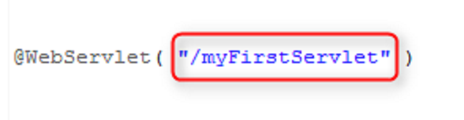

).
Естественно, работа эта простейшая, и я быстренько пишу вот такой код:
).
Естественно, работа эта простейшая, и я быстренько пишу вот такой код:
РАЗБЕЙ ЭТУ ОШИБКУ НА МНОГО МАЛЕНЬКИХ!
Данный раздел посвящен ошибке, или ошибкам, которые вы допускаете, когда придумываете URL-ы на свои Web-компоненты.
Причем, обратите внимание, я говорю именно Web-компоненты
, чтобы подчеркнуть, что совершенно не важно,
на что именно вы собираетесь сослаться в своем Web-приложении:
Правила формирования URL-ов в любом из этих случаев будут одинаковы!
Ну а я, для демонстрации этих правил выбрал сервлет, просто потому что мысль о том,
что пора уже зафиксировать этот достаточно распространенный набор ошибок и экономить время в будущем,
пришла именно во время проверки очередной сервлетной
работы.
Итак, пусть передо мной стоит задача реализовать сервлет, который скажет привет!
(Ух-ты, стихи почти ).
Естественно, работа эта простейшая, и я быстренько пишу вот такой код:
package com.skillsimprover.urlmistakes.servlet;
import java.io.IOException;
import java.io.PrintWriter;
import javax.servlet.ServletException;
import javax.servlet.annotation.WebServlet;
import javax.servlet.http.HttpServlet;
import javax.servlet.http.HttpServletRequest;
import javax.servlet.http.HttpServletResponse;
@WebServlet( "/myfirstservlet.html" )
public class FirstServlet extends HttpServlet {
private static final long serialVersionUID = 1L;
@Override
protected void service(HttpServletRequest request, HttpServletResponse response) throws ServletException, IOException {
response.setContentType("text/html");
response.setCharacterEncoding("UTF-8");
PrintWriter out = response.getWriter();
out.print("Hello From My First Servlet!");
}
}
И в этом классе все замечательно, за исключением URL-а, который на него ссылается. Он выглядит вот так:
Этот URL содержит сразу три ошибки, которые мы описываем ниже.
Ошибка-1:
Нет расширения .html
Или оно есть, но оно не .html!
Например, в примерах из интернета вы часто можете видеть расширение .do
А еще в проектах, над которыми вы будете работать в будущем вы, возможно, встретите такие расширения как:
*.view*.action*.componentИли вообще любое другое!
И тут важный момент:
Все расширения, приведенные выше, да и вообще, любые расширения — ЯВЛЯЮТСЯ ПРАВИЛЬНЫМИ!
Потому что, как мы выясняли с Вам на занятии — серверу вообще наплевать — есть расширение или нет! Ему главное — чтобы URL совпадал.
Поэтому мы сразу оговариваемся:
Да, из-за этой ошибки ваша работа на будет принята, но сама ошибка притянута за уши!
Почему так? Просто потому, что я не могу угадать, какая политика в отношении URL-ов будет принята на вашем реальном проекте.
Однако у нас процесс учебный, и мы будем предполагать, что мы делаем продукт не для какого-то конкретного заказчика,
а для массового потребителя
.
То есть — для всех людей во всем мире.
И вот тут мы приходим к неутешительному выводу:
Многие люди во всем мире боятся, когда ваш URL не заканчивается на *.html
И тут, вдруг, становится уже не важно, что именно провоцирует этот страх — думают ли люди при просмотре вашего URL-а,
что они посещают страницу с какими-то страшными вирусами, или что расширение *.html похищено сотрудниками КГБ,
или они просто больные на всю голову паникеры — главное не в этом, а в том,
что больше такие паникеры на ваш ресурс не пойдут
Ну подумайте сами — стоит ли вам терять посещения только от того, что кто-то чего-то боится?
В общем вывод один:
В рамках нашего курса все URL-ы должны заканчиваться расширением *.html
Ошибка-2: заглавные буквы в URL-е
Если вы посмотрите на пример URL-а, который мы приводили в начале, то заметите, что буквы F и S в нем — заглавные. И чтобы снова не заболтать вас, сразу же сформулируем правило:
Заглавных букв в URL-е быть не должно!
Здесь, в отличие от предыдущих наматываний мысли на дерево
, есть логика,
и убрать заглавные буквы от вас могут потребовать даже на настоящем проекте.
Дело в том, что многие серверы являются регистро-зависимыми.
Да что далеко ходить — вы свою работу перед отправкой проверяли на Apache Tomcat!.
А для регистро-зависимого сервера URL-ы:
/myFirstServlet
или
/myfirstservlet
Совершенно разные!
И тут, конечно, можно долго размышлять на темы того, что хорошо бы написать специальный фильтр,
который будет принимать все URL-ы и приводить их к нижнему регистру, перед тем, как начать обрабатывать запрос.
И что, Tomcat, несомненно, надо покрыть
обычным Web-сервером Apache, который не только регистро-независимый,
но и обладает также кучей дополнительных вкусных плюшек... И....
И много еще чего можно предложить, и многое из предложенного, без сомнения, будет внедрено, но начинается этот долгий процесс с простого правила, которое мы дублируем еще раз:
Заглавных букв в URL-е быть не должно!
Таким образом, наш URL к текущему моменту принял вот такой вид: /myfirstservlet.html.
Ну что же — его осталось украсить совсем чуть-чуть, поэтому — смело вперед!
Ошибка-3: Отсутствие разделителя между словами
Эта такая же ошибка, как и первая, то есть — ни о чем
Если мы еще рав внимательнее посмотрим на наш URL — /myfirstservlet.html — то отметим,
что просто внимательнее
на него посмотреть не получится.
На него нужно смотреть
ОЧЕНЬ ВНИМАТЕЛЬНО!
Прям, глаза на лоб надо выпучить, чтобы понять — как же называется страница, которую мы посетили!
А все потому что, URL состоит из трех слов, которые между собой никак не разделены. И тут больше сказать нечего — надо просто взять самый популярный разделитель для URL-ов, и поставить его после каждого слова.
А самый популярный разделитель между словами — это знак дефиса!
Тут еще можно было бы долго писать о том, что SEO-шники очень сильные чувства питают к знаку дефиса между словами,
и даже пишут по этому поводу умные статьи и книги, но я не стану это делать не столько потому,
что стесняюсь отбирать хлеб у коллег SEO-шников, сколько потому,
что — просто не знаю, о чем писать
Если Вам это интересно, то и ищите те самые умные статьи и книги по SEO.
Ну а у нас, на скучном Java курсе — все!
В результате наш URL стал вот таким — /my-first-servlet.html — и теперь он меня совершенно устраивает!
Что стоит сказать в заключение? Ребята, я заставил вас читать много текста в этом разделе. Но это не самое обидное. Самое обидное в том, что две проблемы из трех, которые были здесь описаны — это придирки чистой воды. Я даже не уверен, что на реальных проектах к вам возникнут претензии, которые мы здесь обсуждали. И с этой точки зрения, препод ваш — свинья, без сомнения.
Однако, с другой стороны, я ни разу не встречал на реальных проектах URL-ов в которых были бы заглавные буквы и слипшиеся
слова.
А представьте, если ваш будущий тим-лид тоже раньше таких URL-ов не видел? А вы ему — бац! — и покажете?
А вдруг он с непривычки — бац! — и обматерит вас?
Короче, пусть уж лучше в этом тривиальном вопросе я, как ваш препод, буду свинья, без сомнения
,
чем ваш будущий тим-лид